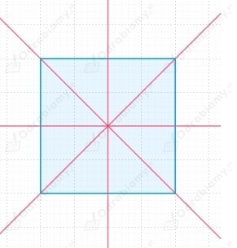
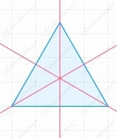
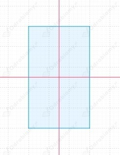
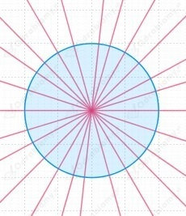
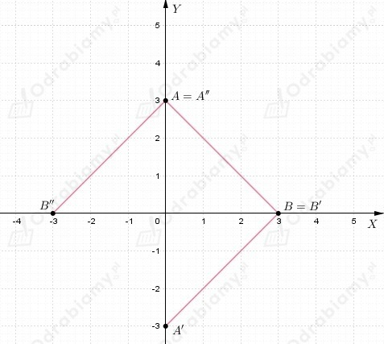
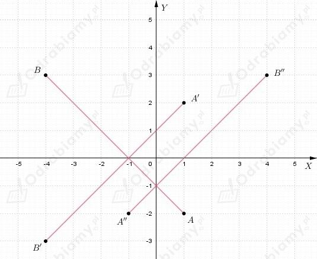
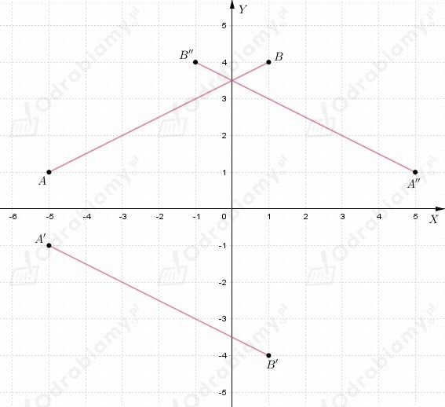
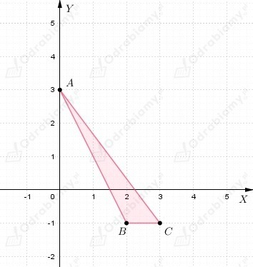
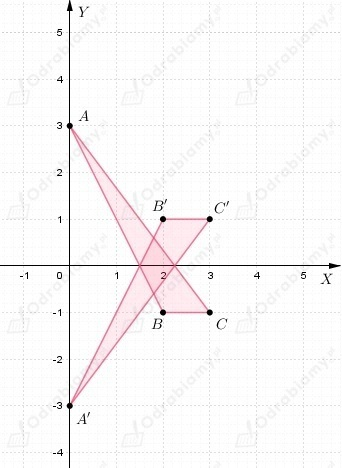
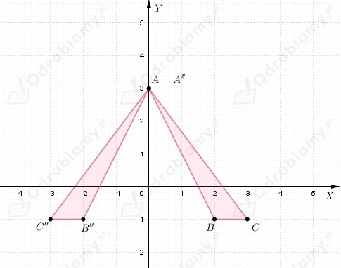

Kwadrat: 4 osie symetrii

Trójkąt równoboczny: 3 osie symetrii

Prostokąt: 2 osie symetrii

Koło: nieskończenie wiele osi symetrii

| Przypomnijmy, że
układu współrzędnych jest punkt P'(x, -y)
układu współrzędnych jest punkt P''(-x, y). |
a)
symetria punktu względem osi OX
symetria punktu względem osi OY
Odcinki w układzie współrzędnych

b)
symetria punktu względem osi OX
symetria punktu względem osi OY
Odcinki w układzie współrzędnych

c)
symetria punktu względem osi OX
symetria punktu względem osi OY
Odcinki w układzie współrzędnych

Trójkąt ABC w układzie współrzędnych

a)
symetria względem osi OX

b)
symetria względem osi OY

a)
Współrzędne wierzchołków prostokąta w symetrii osiowej względem osi OX
b)
Współrzędne wierzchołków prostokąta w symetrii osiowej względem osi OY